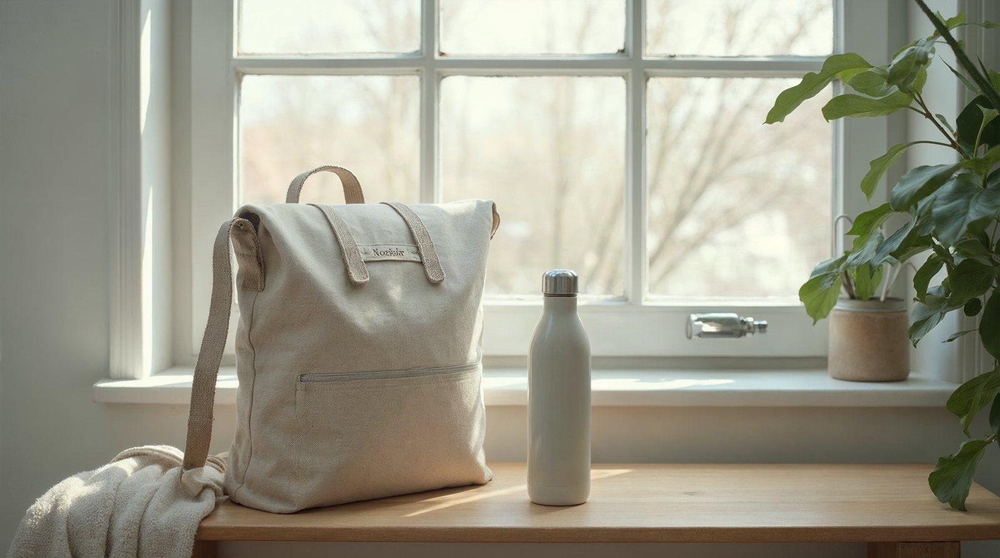
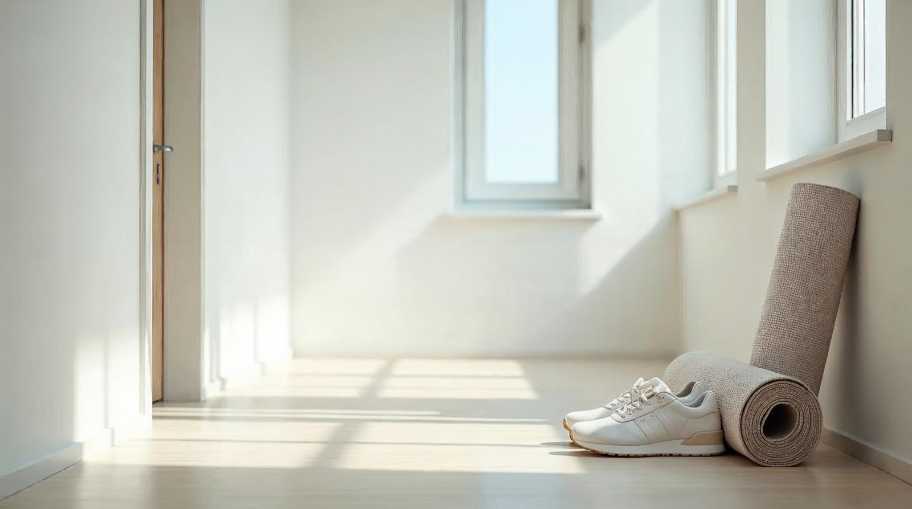
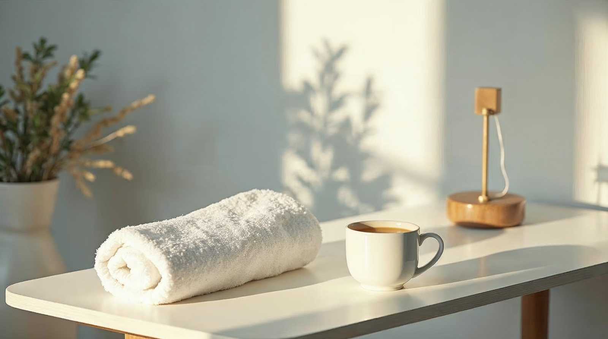
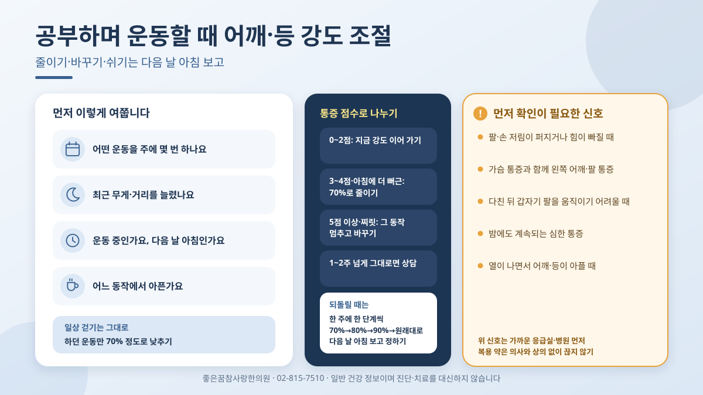

이종호 한의사 감수좋은꿈참사랑한의원 대표원장 (한의사 면허번호 19769)발행 2026-11-26 · 수정 2026-11-26
이 글의 차례
밤 9시 50분, 열람실 스탠드를 끄고 가방 맨 아래에 넣어 둔 운동화를 꺼냅니다. 열 시간 가까이 앉아 있던 몸으로 헬스장 문을 밀고 들어서면, 그제야 하루 중 처음으로 숨이 제대로 쉬어지는 것 같습니다.
오늘은 가슴 운동을 하는 날입니다. 벤치에 누워 지난주와 같은 무게를 밀어 올리는데, 세 번째 세트쯤에서 오른쪽 어깨 앞이 뜨끔합니다. 그래도 마저 끝냅니다. 여기서 멈추면 오늘 하루가 덜 끝난 것 같으니까요.
다음 날 아침, 다시 책상 앞에 앉습니다. 날개뼈 사이가 묵직하고 펜을 쥔 쪽 어깨가 뻐근합니다. 오늘 저녁에도 운동을 가야 할지, 며칠 쉬어야 할지. 문제집을 펴기도 전에 그 고민이 먼저 떠오릅니다.
진료실에서 이런 말씀을 자주 듣습니다. 운동까지 쉬면 하루에 공부밖에 남지 않는다는 말씀, 쉬었다가 다시 하면 그동안 만든 몸이 다 빠질까 봐 불안하다는 말씀입니다. 수험생도, 대학생도, 퇴근 뒤 자격증 공부를 하며 헬스장에 가는 직장인도 비슷한 이야기를 합니다.
저는 그 마음을 압니다. 운동은 몸을 위한 시간이기도 하지만, 하루 종일 눌러 두었던 마음을 털어 내는 시간이기도 합니다. 그 시간을 지키려고 아픈 어깨를 모른 척해 오셨을 겁니다. 그동안 참 애쓰셨습니다.
그래서 제 답은 이렇습니다. 운동을 한 번에 끊기보다, 등굣길·출퇴근길 걷기 같은 일상 움직임은 그대로 두고 따로 하던 운동만 강도를 70% 정도로 낮춰 보시길 권합니다. 무게, 세트, 달리는 거리, 공을 치는 횟수를 조금씩 덜어 내는 것입니다.
그다음은 운동한 다음 날 아침이 알려 줍니다. 아침에 평소보다 더 뻐근하지 않으면 한 주에 한 단계씩 되돌리고, 더 뻐근하면 그 동작만 잠시 쉬거나 다른 동작으로 바꿉니다. 공부하는 자세도 함께 손봐야 어깨가 쉴 틈이 생깁니다.
왜 공부와 운동이 겹치면 어깨·등이 먼저 지칠까요
책상 앞에서 보내는 시간을 떠올려 보세요. 책과 화면은 대개 눈보다 낮은 곳에 있고, 고개는 조금씩 앞으로 나갑니다. 머리가 앞으로 나올수록 목 뒤와 어깨 위 근육은 그 무게를 붙잡느라 쉬지 못합니다.
어깨는 안으로 말리고, 날개뼈 사이 근육은 늘어난 채로 몇 시간을 버팁니다. 공부를 마치고 일어날 때 등 위쪽이 뻣뻣하게 굳은 느낌이 드는 것도 그래서입니다.
그 몸으로 헬스장에 가서 무거운 무게를 밀거나 팔을 머리 위로 들어 올리면 어떨까요? 이미 지쳐 있는 어깨 앞쪽과 등 위쪽에 하루치 부담이 한 번 더 얹힙니다. 오래 앉아 있다가 곧바로 무게를 드는 날은 몸이 덜 데워져 같은 무게도 더 버겁게 느껴지기 쉽습니다.
운동하는 방식도 한몫합니다. 공부 시간이 아까워 짧은 시간에 몰아서 세게 하거나, 평일에는 못 하다가 주말 이틀에 몰아서 하는 분이 많습니다. 시험이 끝나자마자 쉬기 전 무게로 돌아가는 분도 계십니다. 몸은 그동안의 공백을 기억하는데, 마음은 예전 기록을 기억하는 것이지요.
잠도 빼놓을 수 없습니다. 잠이 모자라면 통증을 더 예민하게 느끼는 경우가 많습니다. 새벽까지 공부하고 아침 일찍 일어난 날, 평소 들던 무게가 유난히 무겁게 느껴졌던 적이 있으실 겁니다.
한의학에서는 피로와 긴장이 오래 쌓여 기혈이 원활히 돌지 못하면 근육이 쉽게 굳고 결린다고 보기도 합니다. 아픈 곳과 원인이 있는 곳이 다를 때도 많아서, 저는 앉는 자세와 운동 습관, 잠까지 한 줄로 이어서 봅니다.

먼저 이렇게 여쭙니다
처음 오시면 맥을 짚으면서 운동 이야기를 꽤 자세히 여쭙니다. 운동 이름만으로는 몸에 부담이 얼마나 갔는지 알기 어렵기 때문입니다.
- 어떤 운동을 일주일에 몇 번, 한 번에 얼마나 하시나요?
- 최근 2~3주 사이에 무게나 거리, 횟수를 늘리셨나요?
- 운동하는 동안 아픈가요, 다음 날 아침에 더 아픈가요?
- 밀 때, 당길 때, 팔을 머리 위로 들 때 가운데 어느 동작에서 아픈가요?
- 하루에 앉아 있는 시간과 잠드는 시각은 어떻게 되나요?
- 팔이나 손이 저린 적은 없나요?
스스로 먼저 점검해 볼 수 있도록 몇 가지를 적어 둡니다. 세 가지 이상 해당한다면 이번 주부터 강도를 낮추고 기록을 시작해 보세요.
- 운동 다음 날 아침, 어깨나 등이 전날 밤보다 더 뻐근하다.
- 공부하다 날개뼈 사이가 뻐근해지는 시각이 점점 빨라진다.
- 팔을 머리 위로 올릴 때 어깨 앞이나 위가 걸리는 느낌이 든다.
- 운동 전 몸을 데우지 않고 바로 무게를 들거나 달리기 시작한다.
- 운동하는 날이 주말에 몰려 있다.
- 잠이 모자란 날에도 평소 강도를 그대로 한다.
- 아픈 쪽을 피하려고 반대쪽 팔이나 허리를 더 쓰고 있다.
줄이기·바꾸기·쉬기, 이렇게 나눕니다
강도를 정할 때 저는 두 가지를 봅니다. 운동하는 동안의 통증을 0에서 10까지 점수로 매긴 것, 그리고 다음 날 아침 일어났을 때의 몸입니다. 운동 직후에는 몸이 데워져 덜 아프게 느끼기 쉬워서, 다음 날 아침이 더 정직한 기준이 됩니다.
이어 가기. 운동 중 통증이 0~2점이고 다음 날 아침이 평소와 같다면 지금 강도를 이어 가셔도 됩니다. 이때도 공부 자세와 쉬는 시간은 같이 손봅니다.
줄이기. 운동 중 3~4점이거나 다음 날 아침이 평소보다 더 뻐근하다면 그 운동을 70% 정도로 줄입니다. 열 번 들던 무게라면 일곱 번쯤, 세트를 네 번 하셨다면 세 번쯤, 5km를 달리셨다면 3.5km쯤으로 생각하시면 됩니다.
바꾸기. 운동 중 5점 이상이거나 찌릿하게 날카로운 통증이 오면 그 동작은 그 자리에서 멈춥니다. 그리고 2~3일은 그 동작만 쉬고 아프지 않은 동작으로 바꿉니다. 팔을 머리 위로 미는 운동 대신 하체 운동이나 빠르게 걷기, 실내 자전거를 하는 식입니다.
쉬고 확인하기. 줄이고 바꿔도 1~2주 넘게 그대로이거나 오히려 늘어난다면 혼자 조절하기보다 상담을 받아 보세요. 붓거나, 팔을 들기 어려울 만큼 아프다면 그 운동은 잠시 쉬고 먼저 확인합니다.
되돌릴 때도 순서가 있습니다. 한 주 동안 다음 날 아침이 평소와 같았다면 다음 주에 한 단계 올립니다. 70%에서 80%, 그다음 90%, 그리고 원래대로. 한 번에 두 단계를 건너뛰고 싶은 마음이 들 때가 가장 조심할 때입니다.
저는 이어 갈 수 없는 강도라면 오래가지 못한다고 말씀드리곤 합니다. 일주일에 한 번 세게 하는 것보다 자주, 조금 약하게 하는 편이 몸이 받아들이기 쉽습니다. 힘이 있는 날에만 몰아서 하지 말고, 힘이 없는 날에는 힘이 없는 만큼 하시면 됩니다.
일상에서 먼저 해 볼 수 있는 것
- 등굣길·출퇴근길 걷기는 그대로 두고, 따로 하던 운동만 70% 정도로 낮추기
- 운동 전 10분은 걷기와 어깨 돌리기로 몸을 데우고, 끝난 뒤 5분은 천천히 걸으며 식히기
- 50분 공부한 뒤 일어나 가슴을 펴고 어깨를 뒤로 천천히 다섯 번 돌리기
- 스트레칭은 억지로 당겨 늘리기보다 스스로 움직이는 가벼운 동작 위주로 하기
- 운동한 다음 날 아침, 어깨와 등의 점수를 0~10으로 한 줄 적기
아플 때 세게 늘리면 풀릴 것 같지만, 부위에 따라 억지로 당기는 동작이 오히려 부담이 될 수 있습니다. 당기는 느낌까지는 괜찮습니다. 찌릿하거나 팔로 저림이 내려가면 그 동작은 바로 멈추세요.

운동 종류별로 이렇게 바꿔 봅니다
헬스장에서
어깨가 아플 때는 팔을 머리 위로 미는 동작과 무거운 무게로 가슴을 미는 동작이 먼저 부담이 되는 경우가 많습니다. 그 동작의 무게를 70% 정도로 낮추거나 며칠 빼고, 하체 운동과 걷기는 이어 가 보세요.
등을 당기는 운동은 반동 없이 천천히, 아프지 않은 범위까지만 합니다. 세트 사이에는 휴대폰을 내려다보기보다 일어서서 어깨를 뒤로 천천히 돌려 주세요. 쉬는 동안에도 고개를 숙이고 있으면 목은 쉬지 못합니다.
달리기(러닝)를 할 때
달리기는 어깨와 상관없어 보이지만, 오래 앉아 있던 날은 상체가 앞으로 숙여지고 어깨에 힘이 들어간 채 달리기 쉽습니다. 거리를 70% 정도로 줄이고, 처음 5~10분은 빠르게 걷다가 천천히 뛰기 시작해 보세요. 팔은 힘을 빼고 가볍게 흔듭니다.
옆 사람과 이야기를 나눌 수 있을 만큼의 속도라면 대개 무리하지 않는 범위로 봅니다. 숨이 차서 말을 잇기 어렵다면 한 단계 늦춥니다.
공을 다루는 운동(구기)
배드민턴, 테니스, 농구, 풋살처럼 한쪽 팔로 휘두르거나 갑자기 방향을 바꾸는 운동은 같은 쪽 어깨와 등에 부담이 쌓이기 쉽습니다. 아플 때는 경기보다 가벼운 연습으로, 치는 공의 수를 평소의 70% 정도로 줄여 보세요.
한쪽으로만 도는 운동은 좌우 근육 쓰임이 달라지기 쉬워서, 연습 스윙을 반대 방향으로도 가볍게 몇 번 해 보시길 권합니다. 시작하기 전에는 10분쯤 몸을 데웁니다.
공부 시간표 안에 운동을 넣는 법
공부와 운동을 같이 하는 분께 저는 운동을 공부 시간표 안에 함께 적어 두자고 말씀드립니다. 남는 시간에 하는 운동은 몰아서 세게 하기 쉽기 때문입니다. 일주일에 두세 번, 시간을 정해 두고 그 안에서 강도를 조절하는 편이 몸에 무리가 덜합니다.
몇 시간 앉아 있다가 바로 무게를 들기보다, 헬스장까지 10분쯤 걸어가거나 어깨를 가볍게 돌려 몸을 데운 뒤 시작하세요. 마친 뒤에도 바로 책상에 앉지 말고 5분쯤 천천히 걸으며 숨을 고릅니다.
잠이 모자란 날은 강도를 낮추는 날로 미리 정해 두면 마음이 편합니다. 늦은 밤 강한 운동 뒤 몸이 들떠 잠들기 어렵다면 운동 시각을 조금 앞당기거나 그날은 가볍게 마무리해 보세요.
시험이 2~3주 앞으로 다가왔다면 새로운 고강도 운동은 시작하지 않는 편이 좋습니다. 몸이 어떻게 반응할지 미리 알기 어렵기 때문입니다. 해 오던 운동을 해 오던 크기로 이어 가는 것만으로 충분합니다.
공부하는 동안의 자세도 운동만큼 몫이 큽니다. 책은 독서대로 세우고, 노트북은 받침대에 올려 화면 위쪽이 눈높이쯤 오게 합니다. 휴대폰은 눈높이로 들어 봅니다. 하루 열 시간의 자세가 바뀌면 저녁 운동이 받는 부담도 함께 달라집니다.
예를 들어 이런 경우가 있습니다
예를 들어 하루 열 시간 가까이 앉아 공부하고, 밤마다 가슴과 어깨 운동을 몰아서 하는 수험생의 경우입니다. 어깨 앞쪽과 날개뼈 사이가 함께 불편하다는 분이 많습니다. 머리 위로 미는 동작은 며칠 빼고, 가슴 운동은 70% 정도로, 하체와 걷기는 그대로 두는 것부터 해 볼 수 있습니다.
예를 들어 시험 기간 2주 동안 운동을 쉬었다가, 시험이 끝난 날 바로 예전 무게로 돌아가거나 풋살 경기를 뛰는 대학생의 경우입니다. 공백이 있었다면 70% 정도에서 다시 시작해 한 주에 한 단계씩 올리는 편이 좋습니다. 경기보다 가벼운 패스 연습부터 해 보셔도 됩니다.
예를 들어 퇴근 뒤 자격증 공부를 하고, 주말 이틀에 달리기와 배드민턴을 몰아서 하는 직장인의 경우입니다. 주말에 한 번 세게 하기보다 평일 저녁 20~30분씩 두세 번으로 나누면 부담이 고르게 퍼집니다. 월요일 아침의 어깨를 한 줄씩 적어 보세요.
한의원에서 함께 살필 수 있는 경우
- 강도를 낮추고 동작을 바꿔도 1~2주 넘게 같은 자리가 불편한 경우
- 운동할 때마다 같은 어깨나 등이 되풀이해서 아픈 경우
- 시험이나 대회를 앞두고 운동을 어디까지 해도 될지 정하고 싶은 경우
- 공부 자세 때문에 목·어깨가 늘 뻐근하고 운동 뒤 더 심해지는 경우
처음 오시면 저는 양손을 올려 봐 달라고 말씀드리고 맥부터 짚습니다. 처음 오신 분이든 다시 오신 분이든 모든 분의 맥을 짚습니다. 기록해 오신 것이 있으면 함께 봅니다.
맥을 짚으면서 하시는 운동과 공부 시간표를 듣습니다. 어떤 운동을 언제 얼마나 하시는지, 언제부터 어떤 동작에서 아팠는지, 다음 날 아침에는 어땠는지 차례로 여쭙고, 잠은 몇 시간쯤 주무시는지, 끼니와 소화는 어떤지, 몸이 찬 편인지 더운 편인지도 함께 여쭙습니다.
몸은 앉은 모습과 선 모습을 옆에서 보며 귀와 어깨의 위치를 확인하고, 팔을 들어 올리는 범위와 날개뼈의 움직임, 아픈 동작을 직접 해 보시게 합니다. 팔의 감각과 쥐는 힘도 봅니다. 필요하다고 판단되면 초음파로 어깨 둘레의 힘줄과 근육을 함께 살핍니다.
좋은꿈참사랑한의원에서는 그 뒤 상태에 맞춰 침, 약침, 추나, 체외충격파 가운데 방법을 정합니다. 근육과 힘줄처럼 조직이 지친 곳은 침으로, 관절의 정렬은 추나로 나누어 생각하고, 대개 침을 먼저 놓은 뒤 추나를 합니다. 추나 뒤에는 팔 힘을 같은 방법으로 다시 확인합니다.
진료를 마치기 전에는 운동을 얼마나 줄였다가 언제 되돌릴지 함께 정합니다.
평일은 09:30~20:00(점심 13:00~14:00), 토·일·공휴일은 09:30~15:00에 진료하니 공부나 운동 일정에 맞춰 예약하셔도 됩니다. 건강보험 적용 여부는 방문 전 전화(02-815-7510)로 확인해 주세요.

이렇게 기록해 오시면 상담이 쉬워집니다
- 운동 종류와 요일, 무게·세트·거리·시간
- 운동하는 동안의 통증 점수와 다음 날 아침 점수(0~10)
- 아픈 동작(밀 때, 당길 때, 팔을 머리 위로 들 때, 휘두를 때)
- 하루 앉아 있는 시간, 잠든 시각과 일어난 시각
- 복용 중인 약(진통제를 포함해서)
예를 들면 '수요일 저녁 가슴 운동 70%, 운동 중 2점, 목요일 아침 3점, 날개뼈 사이' 정도면 충분합니다. 2주만 적어도 어떤 동작이 몸에 부담이 되는지 꽤 분명하게 보입니다.
마치며
공부와 운동을 함께 해내는 하루에는 생각보다 많은 힘이 듭니다. 책상 앞에서 버틴 어깨가 저녁에는 무게까지 받쳐 주었으니, 그 어깨가 한 번쯤 신호를 보내는 것도 무리는 아닙니다. 그 신호를 실패로 여기지 않으셨으면 합니다.
이번 주에는 운동을 끊지 말고 70%에서 시작해 보세요. 그리고 다음 날 아침의 어깨를 한 줄씩만 적어 두세요. 다음에 오시면 그 기록과 함께, 어느 동작에서 가장 먼저 신호가 왔는지부터 여쭙겠습니다.
이런 증상은 먼저 확인이 필요합니다
- 팔이나 손으로 저림이 내려가고 그 범위가 점점 넓어지거나, 쥐는 힘이 빠지는 경우
- 운동 중이든 쉬는 중이든 가슴 통증·답답함이나 숨참이 오는 경우(왼쪽 어깨·팔 통증과 함께 오기도 합니다)
이런 신호가 있으면 한의원보다 가까운 병원이나 응급실을 먼저 찾으세요.
함께 읽으면 좋은 글
- 헬스장에서 어깨 운동을 한 뒤 어깨 앞쪽이 아플 때는 무엇을 먼저 확인하나요?
- 스터디카페 낮은 책상에서 고개를 숙여 공부하면 등 위쪽이 뻐근할 때는?
- 운동을 꾸준히 하는 분은 진료 전에 무엇을 알려야 하나요?

여쭙는 것
- 어떤 운동을 일주일에 몇 번, 한 번에 얼마나 하시나요?
- 최근 2~3주 사이에 무게나 거리, 횟수를 늘리셨나요?
- 운동하는 동안 아픈가요, 다음 날 아침에 더 아픈가요?
생활에서 해 볼 것
- 등굣길·출퇴근길 걷기는 그대로 두고, 따로 하던 운동만 70% 정도로 낮추기
- 운동 전 10분은 걷기와 어깨 돌리기로 몸을 데우고, 끝난 뒤 5분은 천천히 걸으며…
- 50분 공부한 뒤 일어나 가슴을 펴고 어깨를 뒤로 천천히 다섯 번 돌리기
한의원에서 함께 살필 것
- 강도를 낮추고 동작을 바꿔도 1~2주 넘게 같은 자리가 불편한 경우
- 운동할 때마다 같은 어깨나 등이 되풀이해서 아픈 경우
- 시험이나 대회를 앞두고 운동을 어디까지 해도 될지 정하고 싶은 경우
먼저 확인이 필요한 신호
- 팔이나 손으로 저림이 내려가고 그 범위가 점점 넓어지거나, 쥐는 힘이 빠지는 경우
- 운동 중이든 쉬는 중이든 가슴 통증·답답함이나 숨참이 오는 경우(왼쪽 어깨·팔 통증…
한눈에 보는 표
| 구분 | 핵심 |
|---|---|
| 여쭙는 것 | 어떤 운동을 일주일에 몇 번, 한 번에 얼마나 하시나요? 최근 2~3주 사이에 무게나 거리, 횟수를 늘리셨나요? |
| 생활에서 해 볼 것 | 등굣길·출퇴근길 걷기는 그대로 두고, 따로 하던 운동만 70% 정도로 낮추기 운동 전 10분은 걷기와 어깨 돌리기로 몸을 데우고, 끝난 뒤 5분은 천천히 걸으며 식히기 |
| 한의원에서 함께 살필 것 | 강도를 낮추고 동작을 바꿔도 1~2주 넘게 같은 자리가 불편한 경우 운동할 때마다 같은 어깨나 등이 되풀이해서 아픈 경우 |
| 먼저 확인이 필요한 신호 | 팔이나 손으로 저림이 내려가고 그 범위가 점점 넓어지거나, 쥐는 힘이 빠지는 경우 운동 중이든 쉬는 중이든 가슴 통증·답답함이나 숨참이 오는 경우(왼쪽 어깨·팔 통증과 함께 오기도 합니다) |
자주 묻는 질문
어깨가 아픈데 운동을 아예 쉬는 편이 낫지 않나요?
전혀 움직이지 않으면 근육이 더 굳어 다시 시작할 때 불편할 수 있습니다. 일상 걷기는 그대로 두고 하던 운동만 70% 정도로 낮춘 뒤, 다음 날 아침 반응을 보며 정하시길 권합니다.
언제 원래 강도로 돌아가도 되나요?
한 주 동안 운동한 다음 날 아침이 평소와 같았다면 다음 주에 한 단계씩 올립니다. 70%에서 80%, 90%를 거쳐 원래대로 돌아가는 식이고, 중간에 다시 뻐근해지면 한 단계 내려옵니다.
아플 때 스트레칭을 세게 하면 빨리 풀리지 않나요?
부위에 따라 억지로 당겨 늘리는 동작이 오히려 부담이 될 수 있습니다. 스스로 움직이는 가벼운 동작부터 하시고, 찌릿하거나 저림이 내려가면 바로 멈추세요.
시험이 얼마 남지 않았는데 운동을 계속해도 될까요?
아예 끊기보다 시간을 정해 가볍게 이어 가는 편을 권합니다. 시험 2~3주 전부터는 새로운 고강도 운동을 시작하지 않고, 잠이 모자란 날은 강도를 낮추는 날로 정해 두세요.
좋은꿈참사랑한의원은 재진 때 지난번 이야기부터 이어서 여쭙니다. 진료시간과 예약은 오시는 길에서 확인하세요.
어디서 상담받을 수 있나요?
좋은꿈참사랑한의원은 서울 동작구 만양로2길 2 신성빌딩 3층·5층(서울 동작구 상도동, 7호선 상도역 3번 출구 근처)에 있습니다. 한의사 3명(이종호 대표원장, 조영기 수석진료원장, 정원영 진료원장)이 진료합니다. 진료시간은 평일 09:30~20:00(점심 13:00~14:00), 토·일·공휴일 09:30~15:00이며, 방문 전 전화로 확인을 권합니다. 예약은 네이버 예약, 카카오톡 상담, 전화 02-815-7510로 받습니다.
이 글은 일반적인 건강 정보이며 개인의 진단이나 치료를 대신하지 않습니다. 증상이 있거나 복용 중인 약이 있다면 진료를 통해 확인하세요. 치료 효과는 개인마다 다를 수 있습니다.
작성 기준: 일반적으로 알려져 있는 건강 정보를 참고해 정리했습니다(대표원장 감수). 증상 기록은 1~2주 동안 하루 1회, 비슷한 시간에 적어 오시면 지난 상태와 비교하기 쉽습니다.